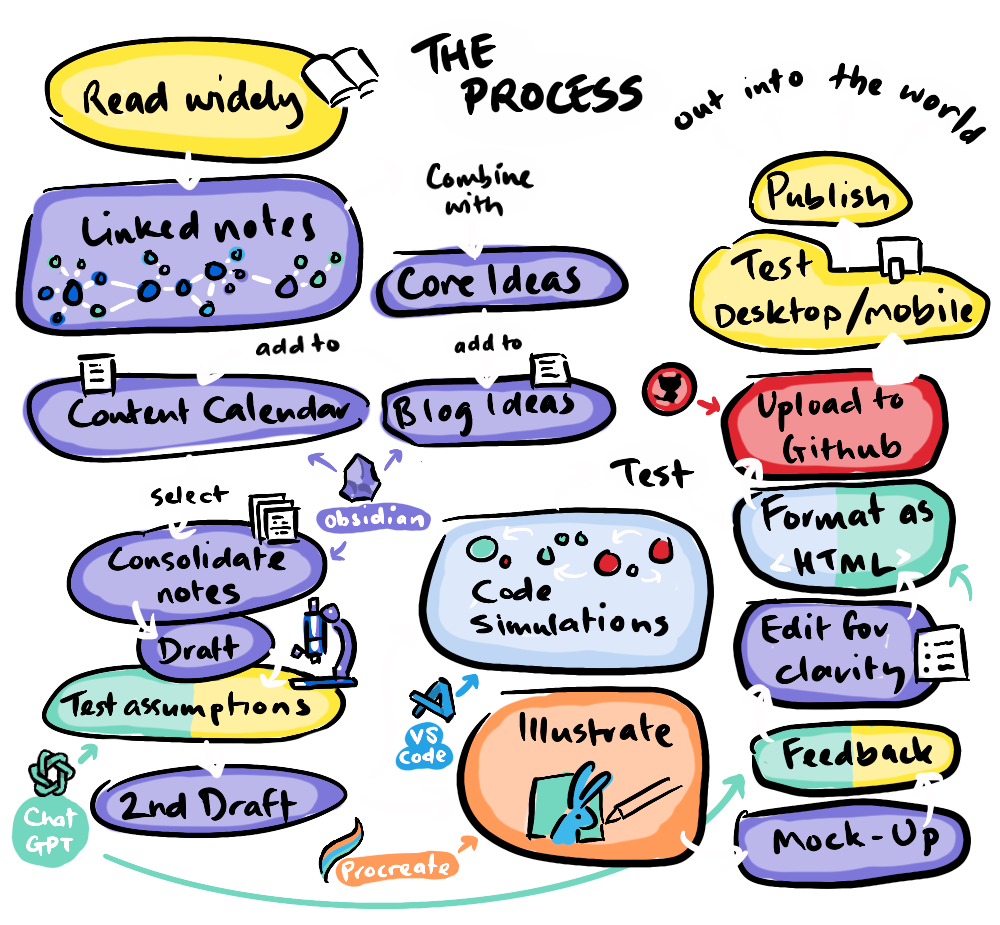
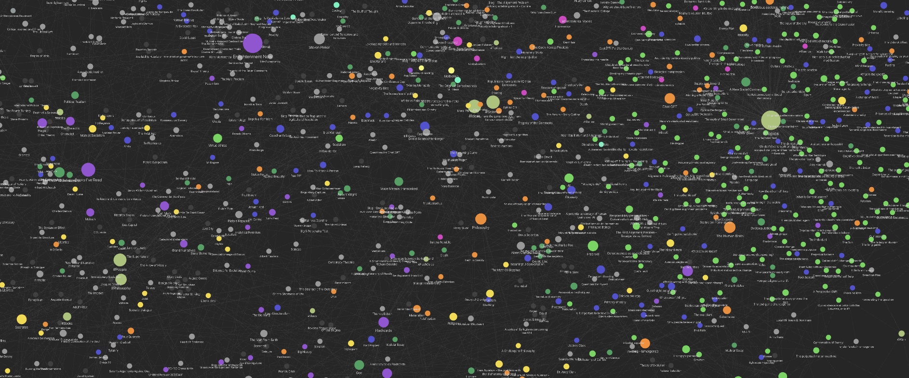
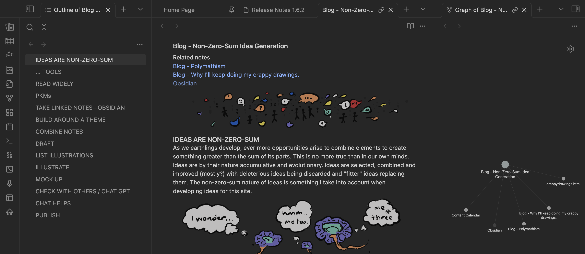
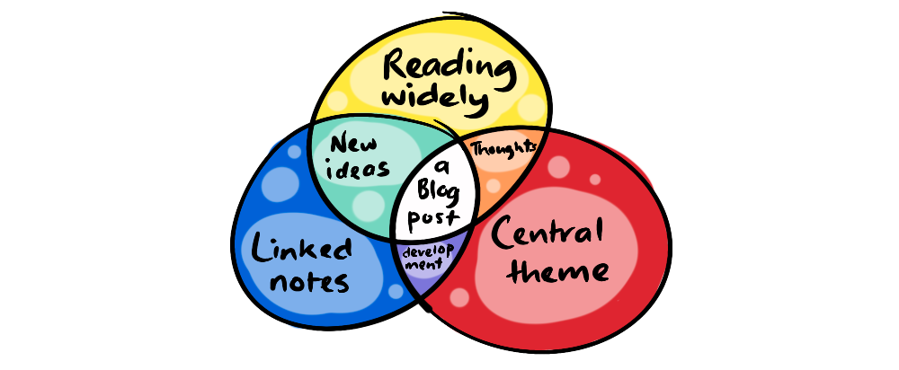
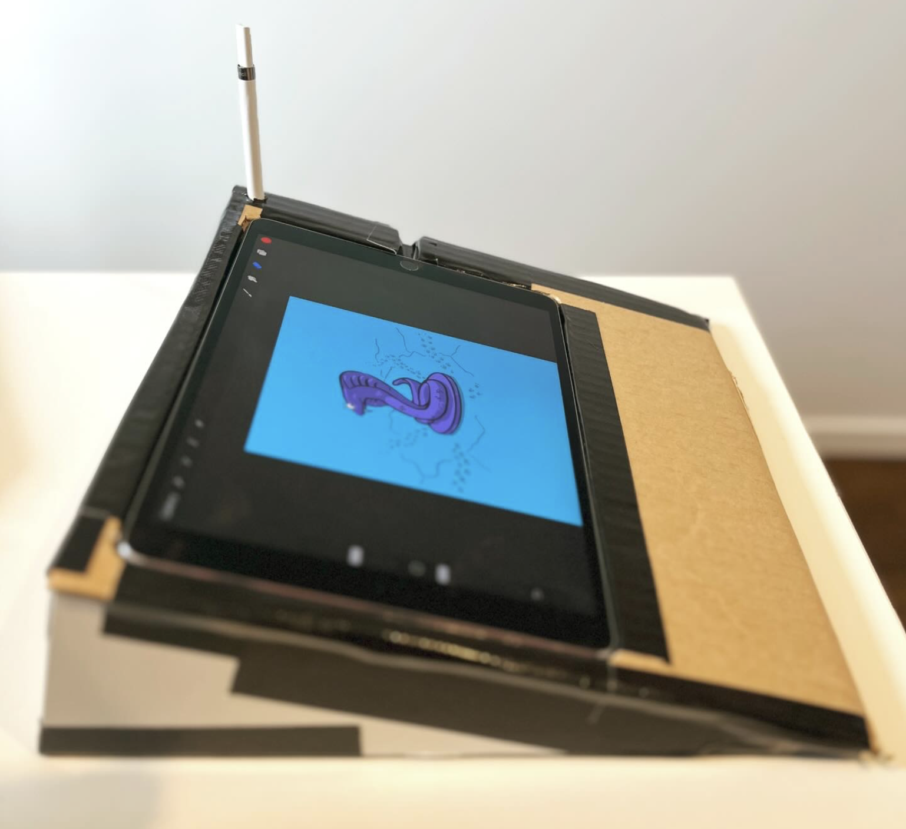
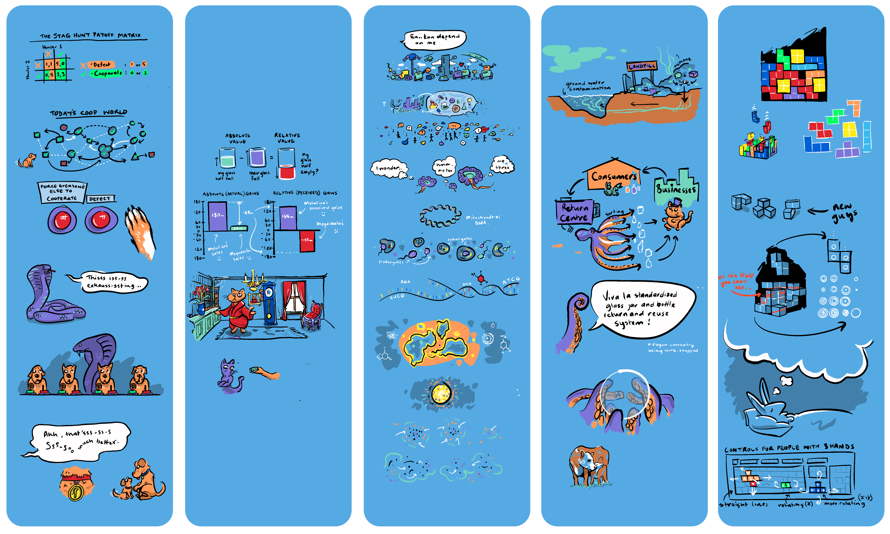
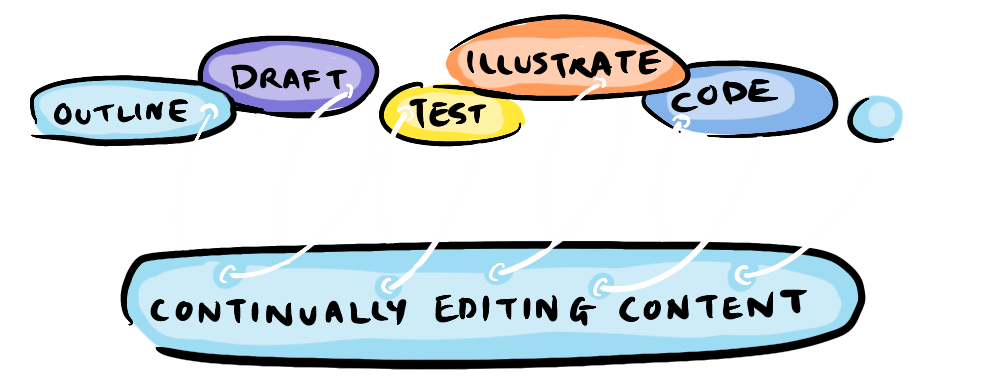

~ a behind-the-scenes look at nonzerosum.games ~

This 50th post marks the site's first birthday! Over the year we've covered many topics, had guest writers, taken game theory out into the world, and built a small community of people interested in exploring win-win solutions.
During this time, many have remarked on the unique/odd/unserious/illegible... style of the site, and asked about how (and why) I've created it this way. So, this post draws back the curtain—focusing on five creative principles that can be applied to any creative discipline—principles built on more than 20 years experience as a creative professional.
- Cast Your Net Wide
- Link Your Ideas
- Sign Your Work
- Interrogate
- Iterate
Plus one bonus tip...
But, before we get to them—how is a post about generating posts for the site relevant to the site itself?
As we earthlings develop, ever more opportunities arise to combine elements to create wonders that are greater than the sum of their parts. This is no more true than in our own minds. Ideas are accumulative and evolutionary—selected, combined and improved, with deleterious ideas replaced by "fitter" ones (ideally). In developing ideas for the site I go through a process that allows for new ideas to emerge from unexpected places, and others to be... deleted (hopefully before publication).
As you can see, the process is quite involved—with room for interpretation at each stage. So, this workflow is informed, at all times, by five creative principles.
While I consume media online just like anyone else, I think it's important to step outside the blogs, YouTube channels, and podcasts that have achieved algorithmic ascendancy if you want to produce original ideas.
I read a lot of books about things I think are valuable, timeless, and unappreciated. This often means reading classics, for instance, I've recently finished studying 'Areopagitica', John Milton's 1644 case against censorship laws. My previous read was 'Piranesi' a contemporary story about a man inhabiting a psychological labyrinth, before that 'Wind and the Willows', before that 'Four Quartets' (a set of poems by T.S. Eliot) and 'Fall of The Aztecs'. You can expect references to these texts in future posts.
Reading in this way allows for connections to occur with ideas that are in the zeitgeist, and with the central ideas I'm developing—particularly when coupled with linked note-taking.
Personal Knowledge Management systems (or PKMs) have become a craze lately, no doubt in response to the information firehose we face online. We need a way to process an amount of information for which our brains are not equipped...
My creative process centers around the linked note-taking app Obsidian. For those who haven't experienced this form of note-taking, imagine your own personal Wikipedia with links to other notes made by putting [[double brackets around them]]. Obsidian has an active community, creating plugins and providing highly detailed guides for harnessing the full potential of linking-your-thinking, but mine is pretty vanilla: I link notes, that's about it.
Using the local graph feature, it's easy to discover related ideas. Even when a link was initially tangential—on review they can reveal unique insights¥. In this way, linked note-taking is less about storing ideas and more about generating them.
Every artist needs a signature, an angle, a recognizable style. Now, I'm not an academic—I have zero authority on any topic the blog covers. So, I’ve designed the site with the phrase...
“These are just ideas from a random human, don’t reference me”
... in mind. This provides the freedom to develop a unified playful aesthetic without worrying that it won't be taken seriously (because it's not meant to be taken too seriously). I want people to feel free to discuss and question the ideas, to speculate and elaborate, bringing their own unique perspective. This approach doesn’t just apply to aesthetics, the content also needs to feel unified.
For many who thrive on novelty, reading widely can feel very natural—but this can become a liability when focus is required. If people wanted something random every day, the online world could serve that up without you. I've found having a consistent offering is important.
This site's focus is on non-zero-sum games and how to best understand them in the real world—to create a brighter future. That's the lens each post uses to explore a different issue each week.
Topics for the blog arise when unique insights from reading widely and linked notes collide with the site's focus.
For instance, when I was making a film about artificial intelligence, I discovered a consensus around a zero-sum problem—the assumption that individual interests must always be at the expense of the collective. This was an issue I hadn't seen explored, and it became the concept behind The Alignment Problem No One Is Talking About. A blog idea becomes a note with links to relevant notes, I store that in a Blog Ideas note, and when I'm ready to develop it, I schedule it in a Content Calendar note—it's notes all the way down.

Once I've selected a blog idea and drafted a post, I interrogate the claims, checking for scientific studies to confirm or negate them and finding case studies.
For instance in Are You a Crab in a Bucket?, I used the Hillsborough Disaster as a real-world analogy, in the Emergence Series, I discovered my original concept was missing an important ingredient: dissipative structures. Other times I'll find that my assumptions were just plain incorrect... in which case I'll have to fabricate evidence, bribe scientists or blackmail administrators in order to maintain my original position (or if that's too much effort, I'll just ditch the idea).
Once I have a second draft down, I'll make a list of illustrations and interactive elements.

As well as the unserious font and colorful background, I draw cartoon critters that are thematically related to the post. These are drawn using an Apple Pencil with an iPad Pro on a home-made drawing board.
In Procreate I use a long page, 1000px wide x 3000px high—space enough to fit all the drawings for a post.
... and I draw in layers:
- Black lines
- White areas
- Shadows
- Colors
I open the page in Photoshop, clear the background and crop each illustration, maintaining a uniform width, and then export as a .png file to maintain the background transparency.
I also love coding, and often use simulations to illustrate systems. Here I must shout out to the incredible Nicky Case, who has inspired both the tone of the site and the use of interactive elements—though Nicky is a far superior coder.
When I first saw Nicky's site I felt a very particular sort of panic that only occurs when you see someone doing something you didn't realize you've always wanted to do, while also being in reverent fear of how well they are doing it. Needless to say, it was a motivator to put pen to proverbial paper.
I illustrate early, and use them to break up the text visually. Doing this helps me to make edits to the text for clarity, for a cleaner aesthetic, or to cut text entirely and let the illustration do the work.
"Writing is thinking, to write well is to think clearly, that's why it's so hard"
- double Pulitzer Prize winner David McCullough
Writing is thinking, but so is drawing, so is outlining, so is coding, so is formatting as html—each stage provides a new lens to see the work more clearly.
As a documentary editor of 20 years, I'm used to taking feedback. My job is essentially to do something wrong over and over—each time making changes based on director feedback—until it is no-longer-wrong, at which point it is finished.
"The only wisdom we can hope to acquire Is the wisdom of humility: humility is endless."
- T.S Eliot (Four Quartets...)
I'll often seek feedback from a friend or family member. I'll even make changes based on feedback after publication, if the comments are bad enough!
I don't use Chat to write content, but I do use it for ongoing feedback—to find poorly clarified or unsupported points. Also once I've finished editing, I'll give Chat an html template of a previous post along with the new content and patiently cajole it to format the content according to the model.
"The real artist ships" - Steve Jobs (apparently not Pablo Picasso)
The most basic creative advice, which is so easy to forget is to simply do the work, and then to do the work all over again.
In The Drawing Advice That Changed My Life Campbell Walker (a.k.a Struthless) tells the story of his mentor critiquing his approach to creativity—starting a million projects but never finishing.
At the time I had thousands of scattered notes, a 30,000-word experimental, non-linear essay, twenty-odd proof-of-concept simulations, some mobile games, a neglected Facebook sketching page, some random paintings I was trying to house, not to mention numerous planning spreadsheets, lists and workflows—it got so bad that, at one point, I was coding three entirely different bespoke planning apps!
Walker's mentor could have easily been addressing me... the advice was simple.
"Draw the same thing every single day" - Mark Schattner
Setting a requirement to produce a blog each week, has been the keystone to building this site, it has brought everything into focus. And I encourage you, whatever your version of drawing the same thing every day is, try doing it for six months. It might change your life.
Creating work regularly requires making a choice and sticking to it, but I find the principles detailed here can contribute greatly to generating the consistent and coherent stream of content necessary to achieve that.
Reading widely brings originality, linking-notes transforms information into concepts, combining those concepts with your own personal focus makes your work unique and recognizable, interrogating the work keeps you honest and trustworthy and constant iteration at each stage enables the essence of the work to reveal itself.
I hope this post has helped give an idea of what goes into a seemingly simple post, and has provided some useful ideas for your own creative endeavours—feel free to link to whatever you're working on in the comments or share your own creative insights.